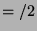

The operational semantics are essentially the same as SLD resolution or pure Prolog with coroutining. Instead of a nondeterministic clause selection followed by (possibly failed) unification and construction of the resolvent we have nondeterministic disjunct selection followed by (possibly failed) unification/constraint inclusion using the (multiple)  calls and construction of the resolvent.